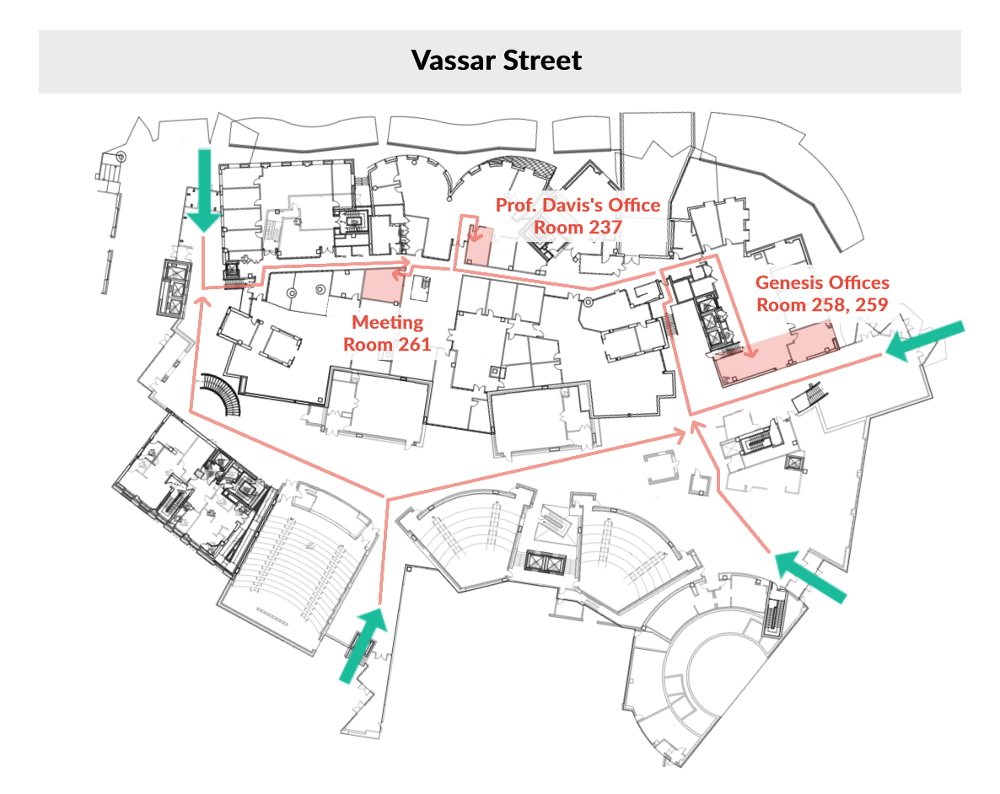

To understand what makes humans uniquely intelligent, we build computational models of how humans tell and understand stories.
On this site
- Vision: We describe what we do and why we do it by introducing the The Strong Story Hypothesis.
- Research: We list our recent works, papers, and theses.
- People: We introduce our current members and describe our active projects.
- Readings: We highlight essential readings by our friends and colleagues.
- Get Involved: We provide information, software demos, and how-to guides. We welcome students, collaborators and sightseers from around MIT and beyond.
Recent news and upcoming events
- Thursday 2020/Jan/30
- 10:00 a.m., 32-101, There will be a video screening of Patrick H. Winston's 2018 How to Speak talk, augmented by live presentations from colleagues.
- 2020/Jan/14
- Patrick H. Winston's 2018 How to Speak talk has been published on MIT OpenCourseWare.
- 2019/Dec/22
- Congratulations to Cagri on a successful defense!
How to find us
The Genesis Group is part of MIT CSAIL, located in the Stata Center (Building 32). Our physical address is 32 Vassar St., Cambridge, MA, 02139.
Information regarding trip to MIT Computer Science and Artificial Intelligence Lab (CSAIL) and parking can be found here.
How to contact us
Feel free to get in touch by e-mail. You can contact Randall Davis (davis@csail.mit.edu) (Principal Investigator) or Dylan Holmes (dxh@mit.edu) (Doctoral Candidate).